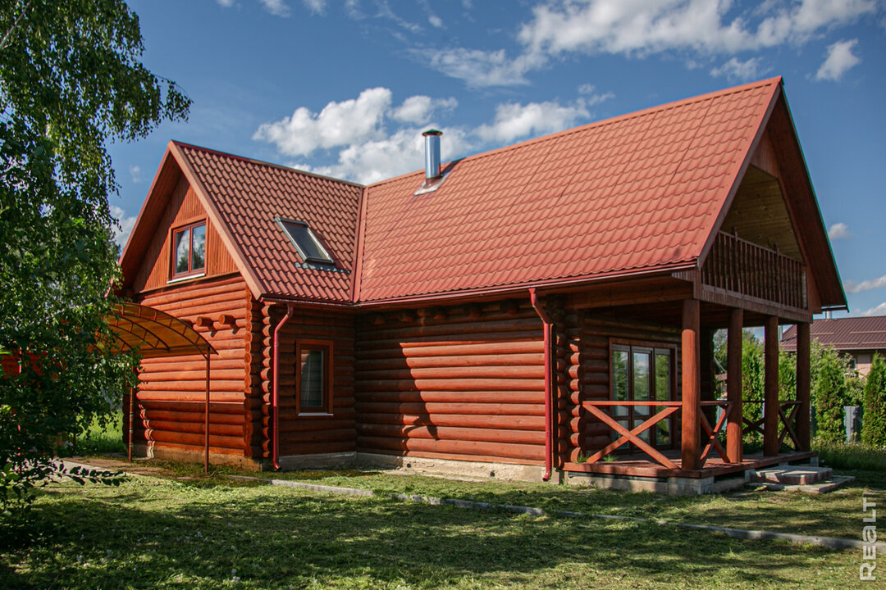
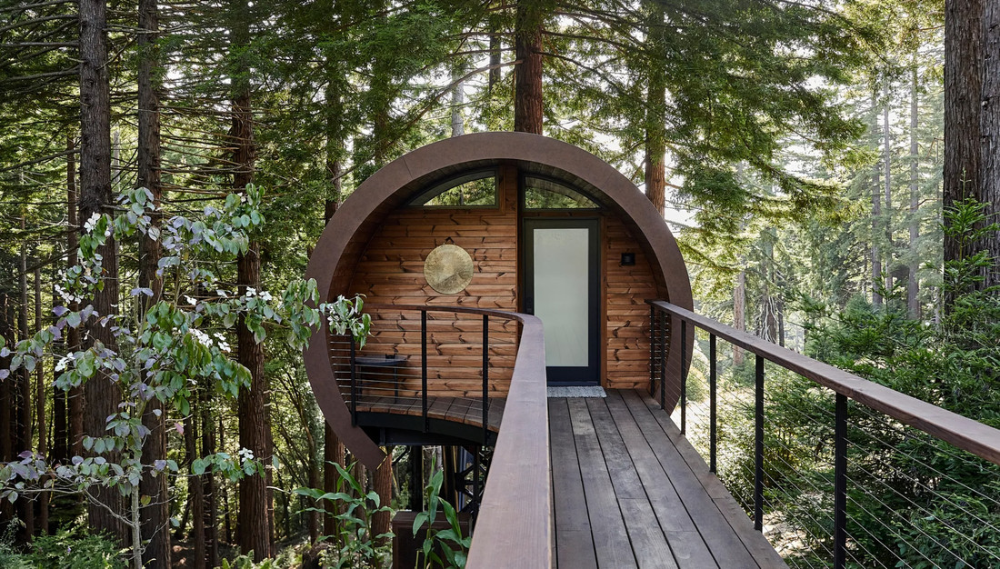

Аренда домов за городом — уютные коттеджи для отдыха
Почему выбирают аренду домов за городом?
- Природа и тишина: Отдохните от городской суеты в уютном загородном доме.
- Комфорт: Все коттеджи оборудованы современной техникой и мебелью.
- Доступность: Всего 30-60 минут от Москвы — и вы на природе.
Как арендовать загородный дом?
- Выберите подходящий дом на нашем сайте.
- Свяжитесь с нами для уточнения деталей.
- Забронируйте дом на удобные даты.
Наши предложения по аренде коттеджей
- Коттеджи у озера: Идеально для семейного отдыха и рыбалки.
- Дома в лесу: Уединение, свежий воздух и прогулки по лесу.
- Гостевые дома: Для больших компаний, корпоративов и мероприятий.
Популярные направления для аренды домов
Мы предлагаем дома для аренды в самых популярных направлениях Подмосковья:
- Новорижское направление
- Рублево-Успенское шоссе
- Калужское шоссе
- Дмитровское направление

